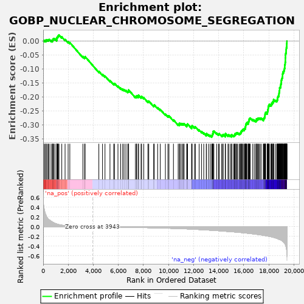
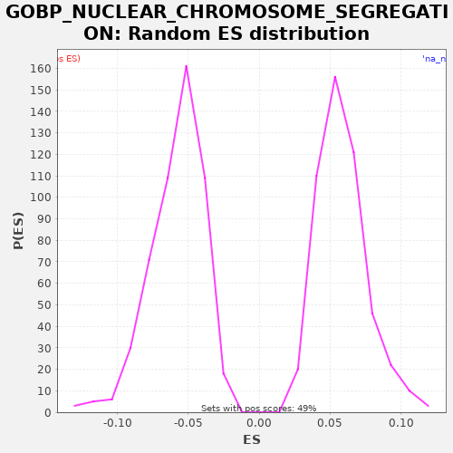

| | | Dataset | X_enriched_genes copy |
| Phenotype | NoPhenotypeAvailable |
| Upregulated in class | na_neg |
| GeneSet | GOBP_NUCLEAR_CHROMOSOME_SEGREGATION |
| Enrichment Score (ES) | -0.34319103 |
| Normalized Enrichment Score (NES) | -5.8597345 |
| Nominal p-value | 0.0 |
| FDR q-value | 0.0 |
| FWER p-Value | 0.0 |
Table: GSEA Results Summary

Fig 1: Enrichment plot: GOBP_NUCLEAR_CHROMOSOME_SEGREGATION
Profile of the Running ES Score & Positions of GeneSet Members on the Rank Ordered List
| SYMBOL | RANK IN GENE LIST | RANK METRIC SCORE | RUNNING ES | CORE ENRICHMENT | | 1 | CDC20 | 40 | 0.429 | 0.0023 | No |
| 2 | PHB2 | 128 | 0.310 | 0.0021 | No |
| 3 | PSMG2 | 216 | 0.241 | 0.0019 | No |
| 4 | CHMP2A | 239 | 0.231 | 0.0051 | No |
| 5 | RAN | 342 | 0.177 | 0.0042 | No |
| 6 | DCTN2 | 425 | 0.154 | 0.0042 | No |
| 7 | ANAPC5 | 478 | 0.142 | 0.0059 | No |
| 8 | NAA10 | 629 | 0.114 | 0.0024 | No |
| 9 | MAD2L2 | 731 | 0.097 | 0.0015 | No |
| 10 | SYCE2 | 770 | 0.092 | 0.0039 | No |
| 11 | TUBG1 | 780 | 0.090 | 0.0078 | No |
| 12 | PSRC1 | 835 | 0.082 | 0.0093 | No |
| 13 | LCMT1 | 942 | 0.069 | 0.0081 | No |
| 14 | P3H4 | 1083 | 0.056 | 0.0052 | No |
| 15 | ZCWPW1 | 1089 | 0.055 | 0.0093 | No |
| 16 | SIRT2 | 1095 | 0.055 | 0.0134 | No |
| 17 | PTTG1 | 1142 | 0.051 | 0.0153 | No |
| 18 | WRAP73 | 1186 | 0.048 | 0.0174 | No |
| 19 | NSMCE2 | 1210 | 0.046 | 0.0206 | No |
| 20 | RMDN1 | 1263 | 0.043 | 0.0222 | No |
| 21 | NCAPH2 | 1485 | 0.031 | 0.0151 | No |
| 22 | MUS81 | 1748 | 0.023 | 0.0058 | No |
| 23 | KLHL22 | 1992 | 0.018 | -0.0025 | No |
| 24 | UBE2B | 2127 | 0.016 | -0.0051 | No |
| 25 | MEI4 | 3168 | 0.005 | -0.0549 | No |
| 26 | UBE2C | 3306 | 0.004 | -0.0576 | No |
| 27 | MEIOB | 3345 | 0.004 | -0.0553 | No |
| 28 | MAPK15 | 4443 | -0.003 | -0.1080 | No |
| 29 | STAG3 | 4736 | -0.004 | -0.1188 | No |
| 30 | HORMAD2 | 4933 | -0.005 | -0.1247 | No |
| 31 | NUDC | 5331 | -0.007 | -0.1410 | No |
| 32 | RMI2 | 5625 | -0.009 | -0.1519 | No |
| 33 | MSH4 | 5694 | -0.009 | -0.1511 | No |
| 34 | HDAC8 | 5968 | -0.010 | -0.1609 | No |
| 35 | MAP10 | 6186 | -0.011 | -0.1679 | No |
| 36 | KIF22 | 6347 | -0.012 | -0.1718 | No |
| 37 | SMC1B | 6455 | -0.012 | -0.1731 | No |
| 38 | CDC16 | 6602 | -0.013 | -0.1763 | No |
| 39 | USP44 | 6746 | -0.013 | -0.1794 | No |
| 40 | SYCE1L | 6813 | -0.014 | -0.1785 | No |
| 41 | KATNB1 | 6819 | -0.014 | -0.1744 | No |
| 42 | TERB1 | 7361 | -0.016 | -0.1982 | No |
| 43 | CORT | 7447 | -0.017 | -0.1983 | No |
| 44 | ANAPC11 | 7473 | -0.017 | -0.1952 | No |
| 45 | SYCP2 | 7606 | -0.017 | -0.1977 | No |
| 46 | CHMP4C | 7607 | -0.017 | -0.1934 | No |
| 47 | M1AP | 7812 | -0.018 | -0.1996 | No |
| 48 | CCNB1 | 7856 | -0.018 | -0.1975 | No |
| 49 | SYCP1 | 8027 | -0.019 | -0.2020 | No |
| 50 | NUP62 | 8356 | -0.021 | -0.2147 | No |
| 51 | CENPK | 8426 | -0.021 | -0.2140 | No |
| 52 | ANKRD31 | 8818 | -0.024 | -0.2300 | No |
| 53 | TTN | 8864 | -0.024 | -0.2280 | No |
| 54 | MLH1 | 9133 | -0.026 | -0.2376 | No |
| 55 | CDC42 | 9343 | -0.027 | -0.2441 | No |
| 56 | RRS1 | 9753 | -0.030 | -0.2610 | No |
| 57 | AGO4 | 9954 | -0.032 | -0.2671 | No |
| 58 | TRAPPC12 | 10039 | -0.032 | -0.2671 | No |
| 59 | REC8 | 10395 | -0.035 | -0.2812 | No |
| 60 | CHMP2B | 10772 | -0.039 | -0.2964 | No |
| 61 | CDC26 | 10876 | -0.040 | -0.2974 | No |
| 62 | CENPS | 10877 | -0.040 | -0.2931 | No |
| 63 | HECW2 | 10982 | -0.041 | -0.2942 | No |
| 64 | PRDM9 | 11094 | -0.042 | -0.2956 | No |
| 65 | HFM1 | 11174 | -0.043 | -0.2953 | No |
| 66 | TEX14 | 11249 | -0.043 | -0.2948 | No |
| 67 | TEX15 | 11456 | -0.046 | -0.3012 | No |
| 68 | DIS3L2 | 11482 | -0.046 | -0.2982 | No |
| 69 | MAD2L1BP | 11523 | -0.046 | -0.2959 | No |
| 70 | CDT1 | 11850 | -0.051 | -0.3085 | No |
| 71 | TEX11 | 11852 | -0.051 | -0.3042 | No |
| 72 | EME2 | 11885 | -0.051 | -0.3015 | No |
| 73 | AXIN2 | 12074 | -0.054 | -0.3070 | No |
| 74 | XRCC3 | 12149 | -0.055 | -0.3065 | No |
| 75 | RMI1 | 12446 | -0.059 | -0.3175 | No |
| 76 | CHMP4B | 12632 | -0.062 | -0.3228 | No |
| 77 | SPICE1 | 12812 | -0.064 | -0.3278 | No |
| 78 | PINX1 | 13014 | -0.067 | -0.3339 | No |
| 79 | CHTF8 | 13029 | -0.067 | -0.3302 | No |
| 80 | ABRAXAS1 | 13196 | -0.070 | -0.3345 | No |
| 81 | EML3 | 13333 | -0.072 | -0.3373 | No |
| 82 | KLHDC8B | 13448 | -0.074 | -0.3388 | Yes |
| 83 | TTL | 13485 | -0.075 | -0.3364 | Yes |
| 84 | CHMP7 | 13503 | -0.075 | -0.3329 | Yes |
| 85 | RAD51C | 13538 | -0.076 | -0.3303 | Yes |
| 86 | NEK6 | 13558 | -0.076 | -0.3270 | Yes |
| 87 | GEM | 13559 | -0.076 | -0.3226 | Yes |
| 88 | RCC2 | 13623 | -0.077 | -0.3215 | Yes |
| 89 | SIRT7 | 13843 | -0.081 | -0.3286 | Yes |
| 90 | TUBG2 | 13988 | -0.083 | -0.3317 | Yes |
| 91 | ANAPC15 | 14054 | -0.084 | -0.3308 | Yes |
| 92 | KIFC1 | 14243 | -0.089 | -0.3362 | Yes |
| 93 | CENPX | 14324 | -0.090 | -0.3360 | Yes |
| 94 | SLF1 | 14358 | -0.091 | -0.3334 | Yes |
| 95 | ABRAXAS2 | 14526 | -0.094 | -0.3377 | Yes |
| 96 | RB1 | 14535 | -0.094 | -0.3338 | Yes |
| 97 | CHMP6 | 14549 | -0.095 | -0.3301 | Yes |
| 98 | BAG6 | 14748 | -0.099 | -0.3361 | Yes |
| 99 | BECN1 | 14800 | -0.099 | -0.3344 | Yes |
| 100 | BOD1 | 14936 | -0.102 | -0.3371 | Yes |
| 101 | CHMP5 | 15037 | -0.104 | -0.3379 | Yes |
| 102 | ESCO1 | 15049 | -0.104 | -0.3341 | Yes |
| 103 | CHFR | 15194 | -0.107 | -0.3373 | Yes |
| 104 | CHMP1A | 15254 | -0.108 | -0.3360 | Yes |
| 105 | DSCC1 | 15301 | -0.109 | -0.3340 | Yes |
| 106 | MCMBP | 15317 | -0.110 | -0.3305 | Yes |
| 107 | KNSTRN | 15387 | -0.111 | -0.3297 | Yes |
| 108 | FMN2 | 15434 | -0.112 | -0.3278 | Yes |
| 109 | PHF13 | 15508 | -0.114 | -0.3272 | Yes |
| 110 | NSL1 | 15635 | -0.117 | -0.3294 | Yes |
| 111 | IK | 15713 | -0.119 | -0.3291 | Yes |
| 112 | CDC6 | 15762 | -0.120 | -0.3272 | Yes |
| 113 | RIOK2 | 15793 | -0.121 | -0.3244 | Yes |
| 114 | PCID2 | 15814 | -0.121 | -0.3211 | Yes |
| 115 | MAD2L1 | 15859 | -0.122 | -0.3191 | Yes |
| 116 | FANCD2 | 15917 | -0.124 | -0.3177 | Yes |
| 117 | BUB3 | 15952 | -0.125 | -0.3151 | Yes |
| 118 | POGZ | 16049 | -0.127 | -0.3158 | Yes |
| 119 | TACC3 | 16060 | -0.128 | -0.3119 | Yes |
| 120 | CCNB1IP1 | 16124 | -0.129 | -0.3109 | Yes |
| 121 | ANAPC4 | 16136 | -0.130 | -0.3071 | Yes |
| 122 | TRIP13 | 16153 | -0.130 | -0.3036 | Yes |
| 123 | KNTC1 | 16162 | -0.130 | -0.2996 | Yes |
| 124 | ACTR3 | 16173 | -0.131 | -0.2958 | Yes |
| 125 | ANAPC7 | 16232 | -0.132 | -0.2945 | Yes |
| 126 | KIF2C | 16253 | -0.133 | -0.2912 | Yes |
| 127 | RAB11A | 16360 | -0.136 | -0.2923 | Yes |
| 128 | SLX4 | 16363 | -0.136 | -0.2881 | Yes |
| 129 | MAU2 | 16400 | -0.137 | -0.2856 | Yes |
| 130 | VPS4A | 16436 | -0.138 | -0.2831 | Yes |
| 131 | ERCC4 | 16440 | -0.138 | -0.2789 | Yes |
| 132 | SPAG5 | 16470 | -0.139 | -0.2761 | Yes |
| 133 | NCAPD2 | 16531 | -0.141 | -0.2748 | Yes |
| 134 | EME1 | 16723 | -0.147 | -0.2804 | Yes |
| 135 | MLH3 | 16846 | -0.151 | -0.2824 | Yes |
| 136 | AKAP8L | 16970 | -0.155 | -0.2845 | Yes |
| 137 | CDC23 | 17015 | -0.156 | -0.2824 | Yes |
| 138 | CDCA8 | 17020 | -0.156 | -0.2783 | Yes |
| 139 | RACGAP1 | 17114 | -0.160 | -0.2788 | Yes |
| 140 | DLGAP5 | 17137 | -0.161 | -0.2756 | Yes |
| 141 | DDX11 | 17211 | -0.163 | -0.2750 | Yes |
| 142 | CHAMP1 | 17295 | -0.166 | -0.2750 | Yes |
| 143 | PIBF1 | 17390 | -0.170 | -0.2755 | Yes |
| 144 | DYNC1LI1 | 17571 | -0.177 | -0.2805 | Yes |
| 145 | FBXW7 | 17573 | -0.177 | -0.2762 | Yes |
| 146 | CDC27 | 17625 | -0.180 | -0.2745 | Yes |
| 147 | CDCA5 | 17665 | -0.181 | -0.2722 | Yes |
| 148 | SEH1L | 17679 | -0.182 | -0.2686 | Yes |
| 149 | ESPL1 | 17700 | -0.183 | -0.2652 | Yes |
| 150 | ZW10 | 17702 | -0.183 | -0.2610 | Yes |
| 151 | TTK | 17737 | -0.185 | -0.2584 | Yes |
| 152 | MIS12 | 17752 | -0.186 | -0.2548 | Yes |
| 153 | TENT4A | 17877 | -0.192 | -0.2569 | Yes |
| 154 | CENPE | 17885 | -0.192 | -0.2529 | Yes |
| 155 | ANAPC1 | 17912 | -0.194 | -0.2499 | Yes |
| 156 | FAM83D | 17927 | -0.194 | -0.2463 | Yes |
| 157 | PLK1 | 17945 | -0.195 | -0.2428 | Yes |
| 158 | FEN1 | 17956 | -0.195 | -0.2390 | Yes |
| 159 | NDC1 | 17962 | -0.196 | -0.2349 | Yes |
| 160 | DSN1 | 17982 | -0.196 | -0.2315 | Yes |
| 161 | LATS1 | 18027 | -0.199 | -0.2295 | Yes |
| 162 | NCAPG | 18044 | -0.200 | -0.2259 | Yes |
| 163 | HASPIN | 18171 | -0.207 | -0.2282 | Yes |
| 164 | BUB1 | 18218 | -0.209 | -0.2262 | Yes |
| 165 | MAD1L1 | 18221 | -0.209 | -0.2220 | Yes |
| 166 | BUB1B | 18289 | -0.214 | -0.2211 | Yes |
| 167 | INO80 | 18299 | -0.214 | -0.2172 | Yes |
| 168 | KIF18B | 18370 | -0.218 | -0.2165 | Yes |
| 169 | CENPQ | 18380 | -0.219 | -0.2126 | Yes |
| 170 | SLF2 | 18387 | -0.220 | -0.2086 | Yes |
| 171 | FANCM | 18530 | -0.230 | -0.2116 | Yes |
| 172 | NUSAP1 | 18638 | -0.239 | -0.2128 | Yes |
| 173 | BRIP1 | 18671 | -0.242 | -0.2102 | Yes |
| 174 | NAA50 | 18698 | -0.245 | -0.2072 | Yes |
| 175 | FBXO5 | 18707 | -0.245 | -0.2032 | Yes |
| 176 | CTNNB1 | 18716 | -0.247 | -0.1993 | Yes |
| 177 | ZWINT | 18751 | -0.251 | -0.1967 | Yes |
| 178 | GEN1 | 18797 | -0.256 | -0.1947 | Yes |
| 179 | DYNC1H1 | 18810 | -0.259 | -0.1910 | Yes |
| 180 | SGO1 | 18817 | -0.259 | -0.1870 | Yes |
| 181 | CCNE1 | 18829 | -0.261 | -0.1832 | Yes |
| 182 | NDC80 | 18836 | -0.262 | -0.1791 | Yes |
| 183 | ATM | 18858 | -0.264 | -0.1759 | Yes |
| 184 | KIF14 | 18865 | -0.264 | -0.1719 | Yes |
| 185 | PDS5A | 18866 | -0.264 | -0.1675 | Yes |
| 186 | NUF2 | 18898 | -0.267 | -0.1648 | Yes |
| 187 | CCNE2 | 18946 | -0.273 | -0.1629 | Yes |
| 188 | VPS4B | 18949 | -0.273 | -0.1586 | Yes |
| 189 | EML4 | 18964 | -0.275 | -0.1550 | Yes |
| 190 | NEK2 | 18975 | -0.276 | -0.1512 | Yes |
| 191 | AURKB | 19000 | -0.279 | -0.1481 | Yes |
| 192 | APC | 19003 | -0.280 | -0.1438 | Yes |
| 193 | KIF18A | 19010 | -0.281 | -0.1398 | Yes |
| 194 | NCAPD3 | 19025 | -0.283 | -0.1362 | Yes |
| 195 | TNKS | 19055 | -0.288 | -0.1333 | Yes |
| 196 | PDS5B | 19075 | -0.292 | -0.1300 | Yes |
| 197 | CTCF | 19099 | -0.296 | -0.1268 | Yes |
| 198 | ACTR2 | 19102 | -0.297 | -0.1226 | Yes |
| 199 | RAD21 | 19104 | -0.298 | -0.1183 | Yes |
| 200 | SMC3 | 19117 | -0.300 | -0.1146 | Yes |
| 201 | CDK5RAP2 | 19124 | -0.301 | -0.1105 | Yes |
| 202 | NIPBL | 19196 | -0.318 | -0.1099 | Yes |
| 203 | ESCO2 | 19202 | -0.321 | -0.1058 | Yes |
| 204 | STAG1 | 19235 | -0.330 | -0.1031 | Yes |
| 205 | NCAPH | 19244 | -0.332 | -0.0992 | Yes |
| 206 | ATRX | 19265 | -0.341 | -0.0959 | Yes |
| 207 | TPR | 19276 | -0.345 | -0.0920 | Yes |
| 208 | AKAP8 | 19277 | -0.346 | -0.0877 | Yes |
| 209 | KNL1 | 19286 | -0.348 | -0.0838 | Yes |
| 210 | SMC4 | 19308 | -0.357 | -0.0805 | Yes |
| 211 | SPDL1 | 19312 | -0.358 | -0.0763 | Yes |
| 212 | ECT2 | 19325 | -0.368 | -0.0726 | Yes |
| 213 | WAPL | 19328 | -0.369 | -0.0683 | Yes |
| 214 | CUL3 | 19329 | -0.369 | -0.0640 | Yes |
| 215 | SMC5 | 19330 | -0.369 | -0.0597 | Yes |
| 216 | SMC2 | 19334 | -0.371 | -0.0555 | Yes |
| 217 | KIF23 | 19335 | -0.372 | -0.0511 | Yes |
| 218 | NUMA1 | 19342 | -0.378 | -0.0471 | Yes |
| 219 | CENPF | 19355 | -0.386 | -0.0434 | Yes |
| 220 | KPNB1 | 19380 | -0.412 | -0.0403 | Yes |
| 221 | SFPQ | 19386 | -0.419 | -0.0362 | Yes |
| 222 | TOP2B | 19388 | -0.424 | -0.0319 | Yes |
| 223 | NCAPG2 | 19395 | -0.432 | -0.0278 | Yes |
| 224 | DUSP1 | 19406 | -0.444 | -0.0240 | Yes |
| 225 | STAG2 | 19426 | -0.476 | -0.0206 | Yes |
| 226 | SMC1A | 19434 | -0.499 | -0.0167 | Yes |
| 227 | INCENP | 19436 | -0.504 | -0.0124 | Yes |
| 228 | HNRNPU | 19439 | -0.516 | -0.0081 | Yes |
| 229 | TOP2A | 19446 | -0.567 | -0.0041 | Yes |
| 230 | PRC1 | 19449 | -0.607 | 0.0002 | Yes |
Table: GSEA details [plain text format]

Fig 2: GOBP_NUCLEAR_CHROMOSOME_SEGREGATION: Random ES distribution
Gene set null distribution of ES for GOBP_NUCLEAR_CHROMOSOME_SEGREGATION